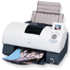

Forside
Introduktion
Valg af
Anvendelse
Motiver

Udskrivning
Udskrivning af billeder til papir er den fremvisningsform, som stiller de højeste krav til et digitalt billede. Næsten uafhængigt af hvilken størrelse man ønsker at printe billedet i, skal man som hovedregel sørge for at have så høj en opløsning på sit billede som muligt. Dette skyldes at printers opløsning normalt er langt højer end et digitalt billedes opløsning.
Når man tager et billede med det formål at udskrive det i standard billede størrelse, 15x10 cm, eller i fuld A4 størrelse, bør man bruge den højest mulige opløsning kameraret har. Som nævnt tidligere kan moderne kameraer lave billeder i 2024x1548. Hvis dette skal printes ud som et standard billede (15x10) bliver opløsningen på billedet, dpi (Dots Per Inch) 134,9x154,8. Set i forhold til de almindeligeste printere som udskriver farver med 600x600 dpi, så er dette langt under printerens grænse. Så jo højere opløsning billedet er i, desto flottere et billede får man ved udskrift.
Hvis vi kigger på et billede som skal fylde en hel A4 side, skal opløsningen på det optimale digitalbillede være på hele 17400x12600, hvilket kræver at kameraret har en opløsning på 219 Megapixels! Så man kan ikke bruge nogen for stor opløsning (endnu) hvis man tager et billede med henblik på udprintning på et helt A4 ark.
Det skal dog bemærkes at det ikke er altid, et motiv kræver en maksimal opløsning.
Som en tommelfingerregel kan man sige, at skal billedet udskrives, skal man vælge den størst mulige opløsning.
« Tilbage | Næste: billeder med høj detaljegrad »
Termer brugt på denne side: dpi (Dots Per Inch) dpi (Dots Per Inch)
|
Til top |